QUEST 04 · UX RESEARCH CASE STUDY
Data Driven Detroit: UX Research Project
Data Driven Detroit’s data site kept some users for 20 minutes and lost others in seconds. Five research methods showed us why, and what to fix first.
METHODS TOOLKIT
- Stakeholder Interviews
- User Interviews
- Surveys
- Heuristic Evaluation
- Comparative Analysis
- Usability Testing
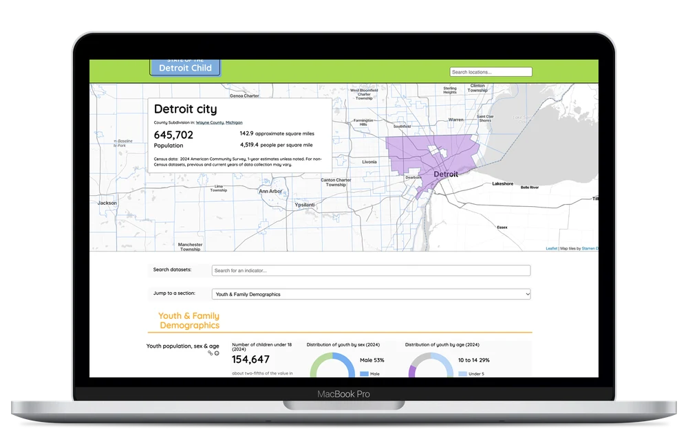
THE 60-SECOND VERSION
THE PROBLEM
The client’s public data platform revealed a significant gap in user engagement: nearly half of visitors never scrolled beyond the top of a profile page, while others spent up to 20 minutes exploring the content. However, the client lacked a clear understanding of what users were trying to accomplish, where they encountered difficulties, or what defined a successful visit. Our challenge was to uncover the usability barriers behind these behaviors and establish a clearer understanding of user needs to guide future improvements.
WHAT WE DID
We conducted a mixed-methods UX research study combining stakeholder and user interviews, a survey, heuristic evaluation, competitive analysis, and usability testing. Each method explored a different aspect of the experience, from understanding user goals and expectations to evaluating navigation, discoverability, and task completion. By triangulating findings across all five methods, we identified three recurring usability challenges and prioritized opportunities for improvement.
WHAT WE DELIVERED
We translated our research findings into three actionable, evidence-based design recommendations, supported by interface mockups: integrating an interactive map into the homepage, making data navigation persistently accessible, and introducing data export functionality. Each recommendation addressed recurring usability barriers identified across our research methods. We also developed a follow-up survey strategy to help the client evaluate user satisfaction and measure the effectiveness of future improvements.
II owned
- Client Communication & Research Coordination: Served as the primary point of contact between the client and research team, facilitating communication, clarifying research objectives, and coordinating project updates and deliverables.
- Survey Design & Development: Co-developed and refined survey questions, conducted pilot testing to identify potential issues, and built the final survey to investigate user needs, behaviors, and expectations.
- Competitive Analysis: Independently researched and evaluated Social Explorer, examining its data visualization, navigation, and interaction patterns to identify opportunities for improving the client’s platform.
- Usability Testing: Moderated 2 of 5 usability testing sessions, guiding participants through research tasks and observing behaviors, navigation challenges, and usability barriers.
- Research Recommendations: Collaborated on translating research findings into actionable design recommendations grounded in evidence collected across multiple methods.
- Research Communication: Developed presentation slides and contributed to recording the final research presentation, communicating key findings, supporting evidence, and recommendations to the client.
WEWe did together
- Stakeholder & User Interviews: Collaboratively conducted and analyzed interviews to understand the client’s objectives, user needs, and challenges within the existing experience.
- Heuristic Evaluation: Selected relevant usability heuristics, independently assessed interface issues, and collaboratively assigned severity ratings to prioritize usability concerns.
- Competitive Evaluation: Identified and selected comparable platforms to benchmark navigation patterns, data accessibility, and interaction design approaches.
- Usability Study Design: Co-designed the usability testing protocol, including realistic task scenarios and interview questions to evaluate how effectively users could navigate and interact with the platform.
- Research Synthesis: Collaboratively analyzed findings across five research methods, identifying recurring usability patterns and translating them into prioritized, evidence-based recommendations.
1 · THE PROBLEM AND OUR GOALS
The site: State of the Detroit Child is a public data visualization and mapping platform that provides insights into the well-being of children across Michigan, including healthcare access, poverty, and educational outcomes. The platform serves social workers, nonprofit organizations, researchers, and community advocates who rely on accessible, reliable data to inform research, support community initiatives, and guide decision-making. However, the value of this information depends on how easily users can discover, interpret, and utilize it.
The challenge: The client’s website analytics revealed inconsistent engagement patterns: approximately 50% of visitors never scrolled beyond the top of a profile page, while some spent nearly 20 minutes exploring the site. Although the client initially interpreted longer sessions as meaningful engagement, they lacked evidence of what users were actually accomplishing during those visits. With several legacy features and no clearly defined success metrics, the team struggled to determine whether the platform effectively supported its users’ goals.
RESEARCH OBJECTIVES
DEFINE MEANINGFUL ENGAGEMENT
Understand users’ goals, motivations, and expectations when accessing public data to establish what a successful experience looks like beyond traditional website analytics.
IDENTIFY USABILITY BARRIERS
Evaluate how users navigate, discover, interpret, and interact with data to uncover design limitations that prevent them from efficiently accomplishing their goals.
DEVELOP EVIDENCE-BASED RECOMMENDATIONS
Synthesize findings across multiple research methods to prioritize actionable design improvements that address user needs and provide the client with a clear rationale for future development.
2 · DISCOVERY: UNDERSTANDING THE USERS
CLIENT AND USER INTERVIEWS
We began by interviewing the client to understand their goals, existing assumptions, and challenges in measuring user engagement. We then conducted five 20-minute semi-structured interviews, using seven open-ended questions to explore how potential users discover, evaluate, and utilize public data platforms. To recruit participants, we conducted targeted outreach through the University of Michigan School of Social Work, LinkedIn, and local nonprofit organizations, reaching social work researchers, professors, and a nonprofit grant director.
Participants relied on public data platforms for academic research, developing educational materials, and supporting grant applications. Across these use cases, users emphasized the importance of finding relevant information efficiently and being able to extract data for use beyond the platform.
“Most of the time, when you’re working on a grant application, they want numbers that back up the need.”
SURVEY DESIGN
Building on our interview findings, we developed a 17-question survey to help the client further investigate two emerging user priorities: ease of use and data export functionality. Questions explored navigation preferences, perceived usability, preferred export formats, frequency of data downloads, and how the absence of export functionality might influence platform usage.
My contribution: I co-developed and refined the survey questions, helped structure the questionnaire, and conducted pilot testing with three participants using a think-aloud approach. Their feedback revealed four opportunities to improve question clarity, response efficiency, and data quality before delivering the finalized survey to the client.
Improvements informed by pilot testing:
- Question sequencing: Moved open-ended questions toward the end to reduce the initial cognitive effort required from respondents.
- Terminology clarity: Replaced the ambiguous phrase “Accessibility of Data” with “Convenient Access to Data” to better communicate the intended meaning.
- Response efficiency: Converted time-consuming 1–5 ranking questions into multiple-choice formats to simplify the response process.
- Respondent segmentation: Added an occupation question to help the client analyze responses across different professional user groups.
Final deliverable: A refined, pilot-tested survey designed for the client to distribute and collect additional user feedback in future research.
WHAT THE CLIENT EXPECTED VS. WHAT USERS SAID
CLIENT ASSUMED
The client initially considered longer session durations and deeper page scrolling as potential indicators of meaningful engagement. However, they lacked evidence connecting these behaviors to successful user outcomes and were uncertain whether existing page elements supported users’ needs.
USERS EXPRESSED
Interviews suggested that users valued efficiency and the ability to reuse data more than simply spending time exploring a platform.
“I do not like wasting time trying to figure things out.”
“Where’s the little download button?”
KEY INSIGHT: WHO WE DESIGNED FOR
KYLE · RESEARCHER
Racing a deadline on an article about school internet access. Moderately tech savvy, and will skip any tool with a confusing interface.
HANNAH · PROFESSOR
Uses maps in lectures and describes herself as an amateur with technology. Needs something reliable, and wants to export data for her assignments.
JOHN · NON-PROFIT ADMIN
Writes federal grant applications. Above-average tech skills, but needs data that is clear and easy for reviewers to follow.
3 · DIAGNOSTIC: EVALUATING THE CURRENT SITE
COMPARATIVE EVALUATION
Building on our user interviews, we conducted a comparative evaluation of three data platforms participants identified as familiar or trustworthy: Charlotte/Mecklenburg Quality of Life Explorer, the U.S. Census Bureau, and Social Explorer. We evaluated each platform using representative user tasks, such as locating neighborhood-level income data, interacting with geographic visualizations, and exporting datasets. Our goal was to identify established interaction patterns and evaluate how effectively each platform supported common user needs.
My contribution: I independently researched and evaluated Social Explorer, analyzing its data navigation, geographic visualization, and export functionality to identify potential improvements for State of the Detroit Child.
HEURISTIC EVALUATION
To systematically evaluate the client’s platform, we selected three of Nielsen’s usability heuristics, prioritizing principles that aligned with recurring themes from our user interviews and comparative research.
- Consistency and Standards: Evaluated whether the platform followed familiar navigation and interaction patterns established by comparable public data platforms.
- Flexibility and Efficiency of Use: Assessed how efficiently users could navigate between datasets, access information, and complete common tasks.
- Aesthetic and Minimalist Design: Examined whether visual elements and information hierarchy supported users’ goals without introducing unnecessary complexity.
Each researcher independently evaluated the interface using a 0–4 usability severity scale, then collaboratively compared findings to identify recurring violations and prioritize issues based on their potential impact.
WHAT THE COMPETITORS DID THAT WE LACKED
Pattern 1: the map is on the first page. All three competitors prominently featured geographic data visualization, allowing users to begin exploring information directly from their landing pages. In contrast, State of the Detroit Child required users to navigate through multiple pages before reaching its interactive map, creating unnecessary steps between users and a core platform feature.
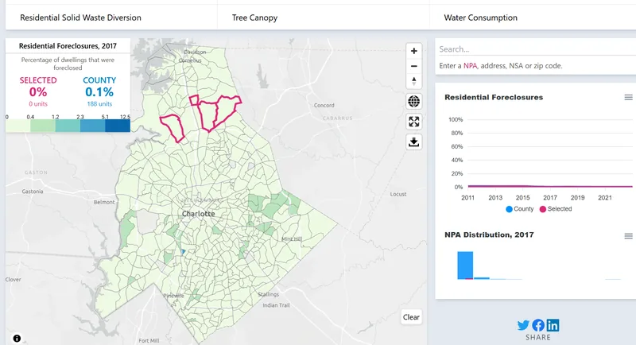
Charlotte/Mecklenburg
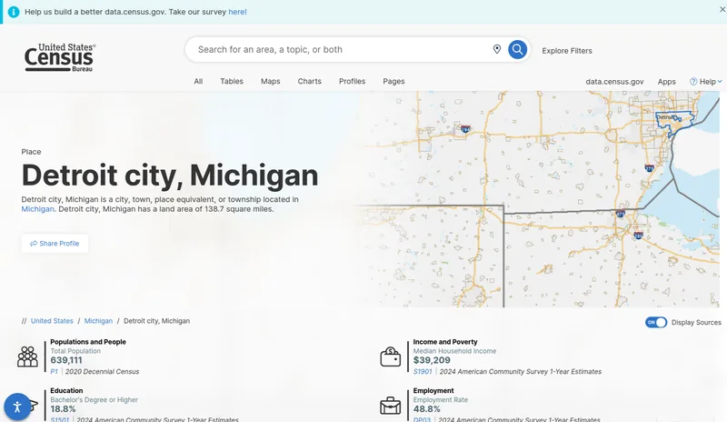
US Census Bureau
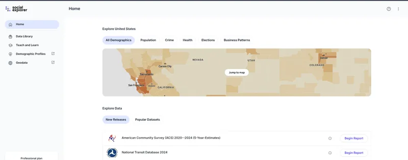
Social Explorer
Pattern 2: data export, in many formats. All three competitors supported downloading data in reusable formats, including CSV, Excel, and other available options. State of the Detroit Child lacked comparable export functionality, limiting users’ ability to incorporate information into external research, reports, and grant applications.
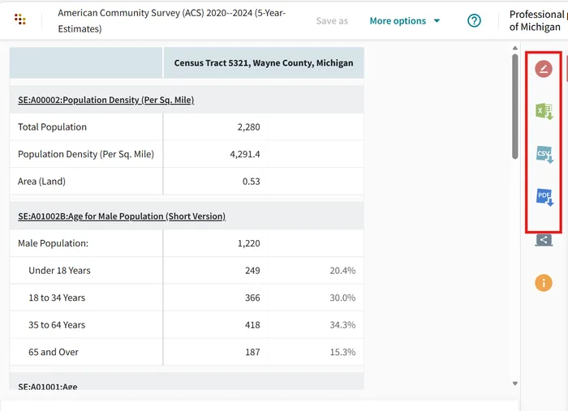
Social Explorer: export options outlined
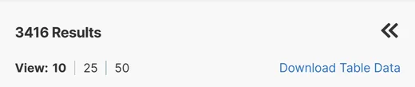
US Census Bureau: Download Table Data
Pattern 3: filters that stay with you. Charlotte/Mecklenburg and the U.S. Census Bureau provided accessible category filters or section navigation to help users move between datasets. On State of the Detroit Child, the navigation dropdown disappeared as users scrolled, requiring them to return to the top or rely on browser search to locate information.
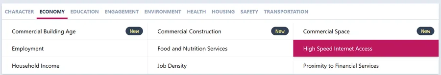
Charlotte: always-visible filters
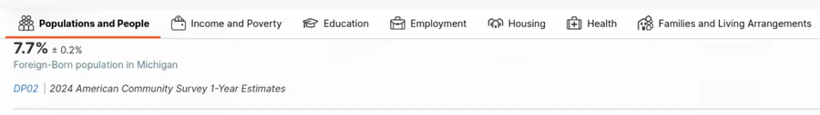
US Census: jump to a section
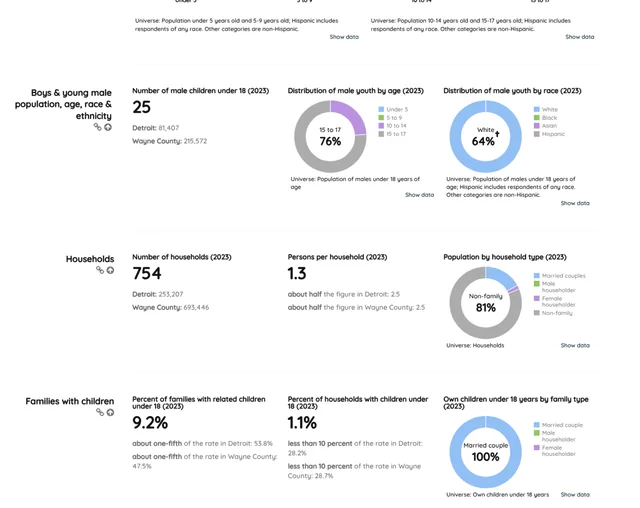
State of the Detroit Child: nav gone mid-page
THE MOST CRITICAL HEURISTIC VIOLATIONS
THE MAP IS BURIED
Violated heuristic: Consistency and Standards
Unlike comparable platforms that prominently display interactive maps, State of the Detroit Child placed its mapping functionality several pages into the navigation experience. We identified this as a critical discoverability issue because users might overlook one of the platform’s core features before reaching it.
NO STICKY NAVIGATION
Violated heuristics: Flexibility and Efficiency of Use; Consistency and Standards
The platform’s navigation dropdown disappeared when users scrolled through lengthy data pages, forcing them to repeatedly return to the top to switch sections. This introduced unnecessary navigation effort and disrupted the process of exploring multiple datasets.
INCONSISTENT NAV BARS
Violated heuristics: Flexibility and Efficiency of Use; Consistency and Standards
Navigation controls varied across the platform, with some pages featuring a hamburger menu and others relying primarily on a search bar. The absence of consistent cross-page navigation made it difficult for users to understand how different sections connected and move efficiently between them.
ADDITIONAL USABILITY CONCERNS
- Redundant Homepage Content: Repeated navigation links and oversized decorative icons competed with essential information and reduced the clarity of the homepage.
- Unclear Visual Identity: Playful iconography and mobile-like desktop layouts potentially created a misleading impression of the platform’s intended audience.
- Limited Geographic Flexibility: The default county subdivision view lacked an accessible option to switch between geographic units such as census tracts, ZIP codes, and school districts.
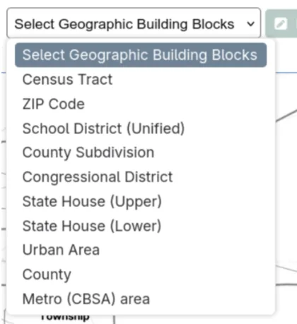
Mockup: the missing geography selector
This allowed us to move beyond identifying potential usability violations toward gathering direct behavioral evidence to support our final recommendations.
4 · VALIDATION: USABILITY TESTING
THE TEST SETUP
WHO
We recruited five participants who had not previously used State of the Detroit Child, including a PhD student, public policy lecturer, public health professor, and two University of Michigan librarians. All participants had moderate to advanced technical proficiency, allowing us to evaluate how first-time users with relevant research and information-seeking experience navigated the platform.
WHAT THEY DID
We conducted five remote usability testing sessions via Zoom, using screen sharing and a think-aloud protocol to observe participants’ interactions and decision-making processes. Each participant completed seven task-based scenarios reflecting common platform use cases, including locating the website tutorial, finding child poverty statistics for Highland Park, and creating a customized data profile. These tasks were designed to evaluate information discoverability, navigation efficiency, and users’ ability to independently access and interact with data.
My contribution: I moderated 2 of the 5 usability sessions, guiding participants through the testing protocol, observing their interactions, and documenting usability challenges and verbal feedback.
WHAT WE MEASURED
We collected both quantitative and qualitative usability data to assess how effectively participants completed the assigned tasks.
- Task Success Rate: Evaluated whether participants could successfully complete each task independently.
- Time on Task: Measured the time required to complete tasks to identify potential inefficiencies and navigation barriers.
- Think-Aloud Observations: Captured participants’ verbal feedback, decision-making processes, and moments of confusion throughout their interactions.
- Pre- and Post-Test Questions: Gathered background information, initial expectations, and overall impressions of the platform after completing the tasks.
Because several tasks depended on the completion of earlier steps, we provided assistance when participants became unable to proceed, allowing them to continue through the remaining scenarios while documenting where intervention was necessary.
TASK RESULTS: 32 OF 35 ATTEMPTS SUCCEEDED
| TASK | P1 · PHD STUDENT | P2 · LECTURER | P3 · PROFESSOR | P4 · LIBRARIAN | P5 · LIBRARIAN |
|---|---|---|---|---|---|
| 1. Find the tutorial | ✔ 15s | ✔ 11s | ✔ 28s | ✔ 31s | ✔ 5s |
| 2. Find Detroit’s data page | ✔ 30s | ✔ 1m | ✔ 55s | ✔ 23s | ✔ 20s |
| 3. Child poverty in Highland Park | ✔ 2m 25s | ✔ 45s | ✔ 56s | ✔ 42s | ✔ 1m 30s |
| 4. Find a 2017 figure using “Over Time” | ✔ 1m 10s | ✔ 55s | ✔ 30s | ✔ 2m 3s | ✔ 1m 30s |
| 5. Find another user’s custom profile | ✔ 40s | ✔ 40s | ✔ 33s | ✕ 2m 21s | ✔ 1m 24s |
| 6. Create a custom profile by drawing | ✕ 50s | ✔ 5m 50s | ✔ 2m 30s | ✔ 46s | ✔ 4m 34s |
| 7. Find two topic pages | ✔ 10s | ✔ 30s | ✔ 1m 30s | ✕ 2m 10s | ✔ 30s |
✔ = passed, ✕ = failed. Yellow = passed in over 1 minute. Red = failed, or passed in over 4 minutes. Task 7’s failure was partly our fault: the wording was ambiguous, so we rewrote it.
WHAT WE HEARD
“Have to go to three different places on the screen, 2 different search bars, one button at the bottom.” (P1)
“where do I actually start?” (P4, on the homepage)
“it’s not exploring by topic but exploring the context of the data.” (P5)
“Big icons just jumping to different sections of the Detroit data page can be confusing.” (P2)
FINDING → RECOMMENDATION
FINDING 1
THE MAP IS HARD TO REACH
Usability testing revealed that participants felt overwhelmed by the homepage’s information and struggled to identify where to begin exploring data. Several participants expressed a preference for accessing the interactive map directly from the homepage rather than navigating through multiple pages. This finding reinforced our comparative evaluation, where all three competing platforms prominently featured geographic data visualization.
RECOMMENDATION 1
MOVE THE MAP TO THE HOMEPAGE
We recommended integrating the interactive map directly into the homepage to improve feature discoverability and reduce unnecessary navigation. This would allow users to immediately explore geographic data and access relevant information without navigating through multiple pages.
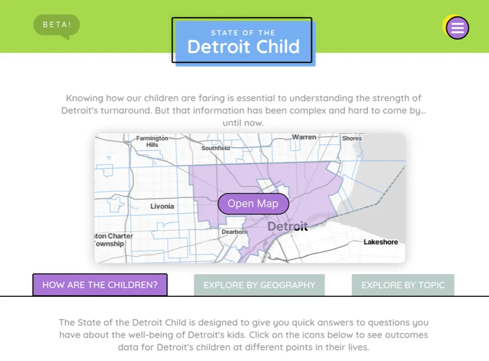
FINDING 2
DATA IS TOO HARD TO SCAN
3 out of 5 participants struggled to locate specific information within lengthy data pages. Participants frequently overlooked the existing “Jump to a Section” dropdown, while the “Over Time” visualization control was also difficult to discover, taking one participant approximately 50 seconds to locate. These observations suggested that limited navigation visibility and unclear information hierarchy increased the effort required to explore and compare datasets.
Press play to watch the scroll to the bottom.
RECOMMENDATION 2
KEEP “JUMP TO A SECTION” STICKY
We proposed making the “Jump to a Section” dropdown sticky so users could navigate between datasets without repeatedly scrolling to the top. We also recommended positioning the “One Year” and “Over Time” controls alongside the dropdown to improve visibility and make switching between data views more intuitive.
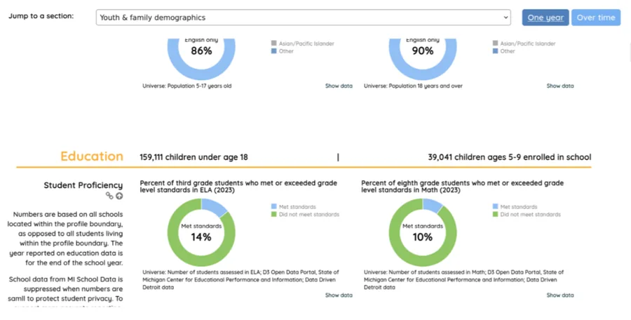
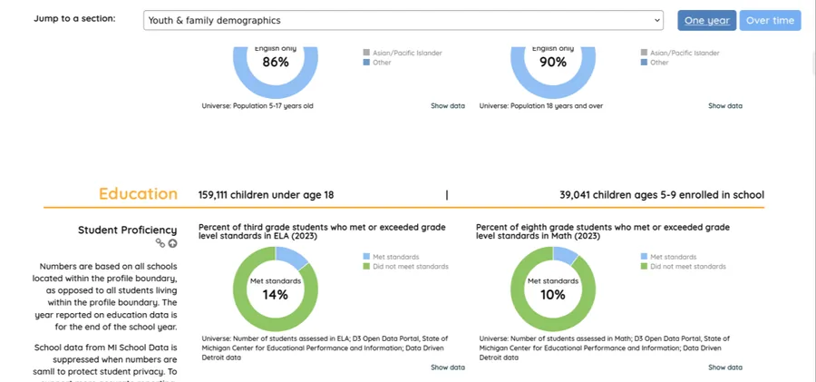
FINDING 3
LIMITED DATA EXPORT FUNCTIONALITY
Interviews revealed that users frequently relied on public datasets for academic research, grant applications, and professional reports, making the ability to download and reuse information particularly important. However, State of the Detroit Child did not provide a direct data export option, despite all three evaluated competitors supporting downloadable datasets. This gap was further reinforced during usability testing when a participant explicitly requested an “Export Data” button.
RECOMMENDATION 3
LET USERS EXPORT DATA
We recommended introducing a clearly visible “Export Data” function within data visualization pages, supporting reusable formats such as CSV, Excel, and JSON. This would help users incorporate information into external analysis tools, research projects, and reports without manually extracting data from the website.
ADDITIONAL USABILITY RECOMMENDATIONS
Beyond our three primary recommendations, usability testing revealed smaller opportunities to improve navigation clarity and content discoverability.
- Improve Tutorial Discoverability: Add “Site Tutorial” to the hamburger navigation menu, where two participants initially expected to find it.
- Clarify Page Labels: Rename ambiguous navigation labels, such as “Custom Profiles” to “User Created Profiles,” to better communicate their purpose.
- Reduce Navigation Ambiguity: Clarify the distinction between “Additional Resources” and instructional content after a participant mistakenly expected to find the tutorial under that section.
5 · IMPACT AND REFLECTIONS
VALIDATING RECOMMENDATIONS THROUGH MULTIPLE RESEARCH METHODS
Rather than relying on findings from a single research method, I wanted to ensure our recommendations were supported by multiple sources of evidence. We triangulated findings across interviews, comparative evaluation, heuristic evaluation, and usability testing to identify recurring usability barriers and strengthen the rationale behind our proposed improvements. This approach helped us distinguish isolated observations from consistent patterns and prioritize recommendations grounded in both user needs and established usability principles.
| RECOMMENDATION | INTERVIEWS | SURVEY | COMPARATIVE | HEURISTIC | USABILITY |
|---|---|---|---|---|---|
| Map on the homepage | ◐ PARTLY | – NOT MEASURED | ✔ SUPPORTS | ✔ SUPPORTS | ✔ SUPPORTS |
| Always-visible data navigation | ◐ PARTLY | – NOT MEASURED | ✔ SUPPORTS | ✔ SUPPORTS | ✔ SUPPORTS |
| Data export | ✔ SUPPORTS | ◐ DESIGNED TO TEST | ✔ SUPPORTS | ◐ NOTED | ✔ SUPPORTS |
“Partly” indicates broader findings related to navigation or ease of use rather than direct validation of a specific solution. The survey was designed and pilot-tested but was not distributed to a larger sample during our study.
THE OUTCOME
Our research helped the client move beyond traditional website engagement metrics toward a clearer understanding of what users actually value: efficient access to relevant information and the ability to reuse data for their work.
We delivered:
- Three prioritized design recommendations: Proposed improvements to map discoverability, persistent navigation, and data export functionality, supported by research findings and interface mockups.
- Evidence-based research findings: Synthesized insights across multiple methods to explain recurring usability barriers and provide a rationale for future design decisions.
- A client-ready survey instrument: Developed and pilot-tested a 17-question Qualtrics survey, accompanied by a low-cost distribution strategy targeting approximately 500 respondents.
- Actionable research deliverables: Communicated findings, usability concerns, and recommendations through a final client presentation to support future platform improvements.
WHAT I LEARNED
ONE QUESTION, FIVE LENSES
This project reinforced the importance of combining complementary research methods to develop a more comprehensive understanding of user needs. Interviews revealed what users valued, comparative evaluation established industry benchmarks, heuristic evaluation identified potential usability issues, and usability testing provided behavioral evidence to examine those concerns. I learned that connecting findings across methods creates a stronger foundation for recommendations than relying on individual observations.
DEFINE SUCCESS FIRST
The client initially relied on session duration and scrolling behavior to interpret engagement without a clear definition of what users were trying to accomplish. Through our research, I recognized the importance of establishing user-centered success criteria before selecting evaluation methods. In future projects, I would prioritize aligning with stakeholders on measurable user outcomes during the initial research planning phase.
BROADEN WHO WE TALK TO
Although our participants had relevant experience working with public information, most came from academic backgrounds and demonstrated moderate to advanced technical proficiency. This limited our ability to understand how less technically experienced users or community-based practitioners might interact with the platform. With additional time and resources, I would expand recruitment through the client’s existing networks to capture a broader range of user experiences and accessibility needs.